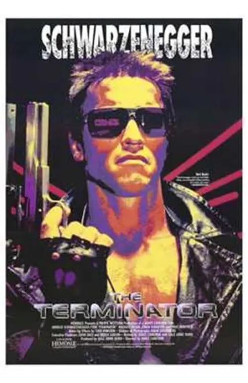

Encabezada por la inolvidable interpretación de Arnold Schwarzenegger como el icónico modelo T-800, la saga evolucionó desde el suspenso y terror opresivo de la entrega original (The Terminator, 1984) hasta el espectáculo revolucionario de Terminator 2: Juicio Final (1991), película que redefinió los efectos visuales en Hollywood. A lo largo de sus secuelas, cómics y series de televisión, la franquicia aborda temas profundos como el libre albedrío, los peligros de la tecnología descontrolada y el destino, consolidando frases e imágenes imborrables en la historia de la cultura pop.
Además de su espectacular modo historia cinematográfico, Mortal Kombat 11 ofrece un robusto ecosistema de contenido para un jugador y multijugador. Introduce un profundo sistema de personalización de variantes que permite modificar el aspecto, las herramientas y el catálogo de movimientos de cada personaje según el estilo de juego del usuario. Con modos dinámicos como las Torres del Tiempo, una versión totalmente explorable en tercera persona de la Kripta y una plantilla diversa que combina luchadores icónicos con estrellas invitadas de la cultura pop, esta obra se consolida como uno de los títulos de lucha más completos y viscerales del género.